Numerolojiyi Türk ve Yabancı Uzmanlardan Öğren, Yaşam Yolculuğuna Işık Tut
Doğum tarihindeki sayıların rehberliğini keşfet: Günlük, aylık ve yıllık enerjini ücretsiz hesapla; numeroloji eğitimleriyle kendini daha yakından tanı.
Günlük · Aylık · Yıllık Enerjini Hesapla
Doğum tarihini ve bakmak istediğin tarihi gir; sayının karşılığı olan arketipi ve kısa yorumunu hemen gör. Detaylı analiz için 22'lik Numeroloji eğitim sayfasına yönlendireceğiz.
Varsayılan olarak bugünün tarihi seçilidir. "Enerjimi Hesapla"ya bas.
Bu yorumlar kesin bir öngörü değil, ilgili dönemde karşılaşabileceğiniz enerji ve olasılıkların tahmini bir yorumudur.
Arketipimi Hesapla
Sadece doğum gününüzü (ayın kaçı olduğunuzu) seçin — herhangi bir hesaplama yapmanıza gerek yok, arketipiniz anında karşınızda.
Örn: 23 Mart doğumluysanız "23" seçin.
Büyücü
Olumlu Yön
Gölge Yön
Hayat Amacı Sayını Hesapla
Doğum tarihinin rakamları senin hayat amacını gösterir. Aşağıya doğum tarihini gir, hayat amacı sayını ve kısa yorumunu hemen öğren.
Ayırıcı yazmana gerek yok: "331970" ya da "03.03.1970" — ikisi de olur.
İsmini Analiz Et
İsmindeki harfler sana özel bir karakter hikâyesi anlatır. Sadece adını yaz, her harfin taşıdığı anlamı ve isminin sana anlattığı hikâyeyi keşfet.
Eğitimlerimiz
Okulun amiral gemisi programı 22'lik Numeroloji'nin yanı sıra farklı uzman eğitmenlerle hazırlanmış özel programlar sunuyoruz.
22'lik Numeroloji
9 sayı yaklaşımı yerine 22 arketip ile genişletilmiş numeroloji okuması; 13 çakra sistemi, şifa sayısı, kader…
Eğitimi İncele →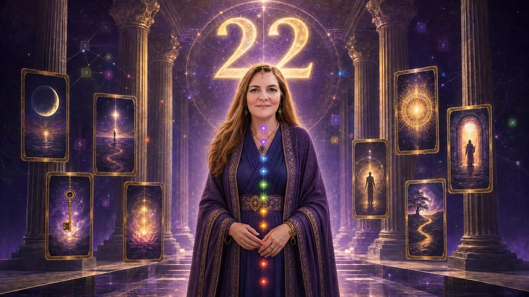
Pisagor Karesi
Çin numerolojisi temelli kare sistemiyle karakter ve potansiyel analizi; güçlü/zayıf yönler, meslek yönelimi…
Eğitimi İncele →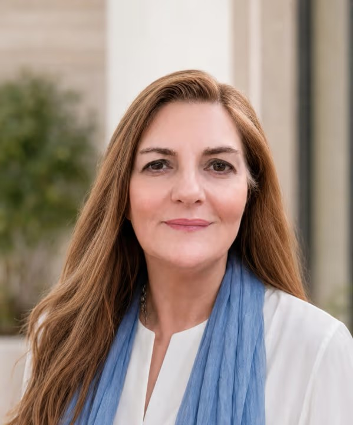
Kader Matrisi Ladini Metodu
Evrenin 22 kod enerjisine dayanan, doğum tarihinden yola çıkarak yaşam potansiyeli, karmik dersler ve ruhsal…
Eğitimi İncele →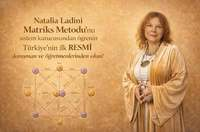
7 Kuşak Soy Şifası Eğitimi
7 kuşak soy hattı şifası, atasal travma ve güç potansiyellerinin açığa çıkarılması; soy programları ve kuşak…
Eğitimi İncele →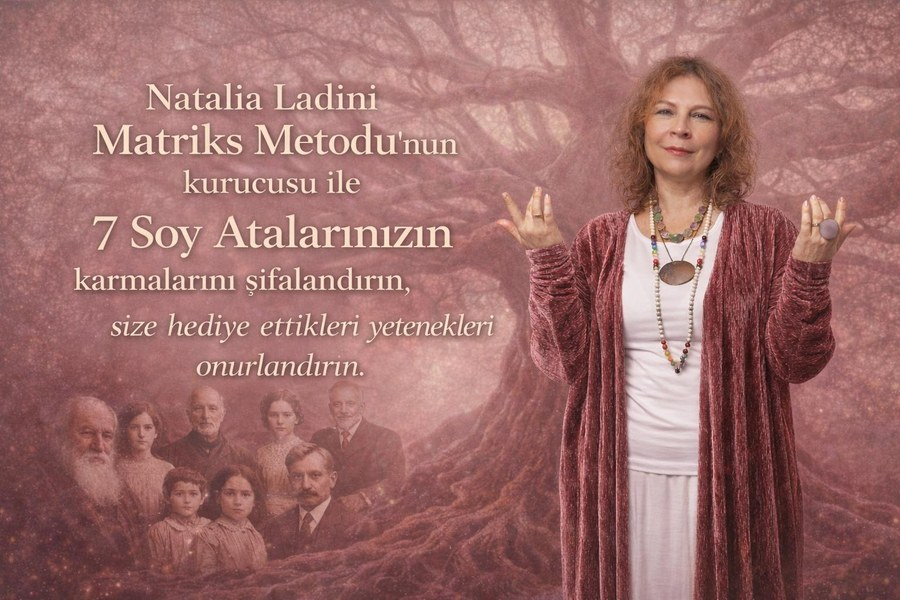
Dr. Sibel Arda ile Hayatın Matematiği
Matriks, arketipler, ilişki/sinerji ve zaman analizini bir araya getiren 4 modüllü, sertifikasyon sınavlı…
Eğitimi İncele →Karmik Numeroloji Eğitimi
Anael Karmik Numeroloji hesaplama sistemi ile arkanaların ve arketiplerin özel anlamları, karmik görevler,…
Eğitimi İncele →
Kozmik Enerji Eğitimi
Aura, çakra ve yaşam enerjisi akış kanalları sistemleri; inisiyasyon süreci ve üç temel kanal aktivasyonuyla…
Eğitimi İncele →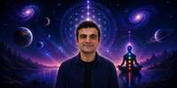
Numeroloji için Astroloji Eğitimi
Astrolojinin temel bilgilerini öğrenirken numeroloji analizlerine nasıl entegre edileceğini adım adım…
Eğitimi İncele →
Numji Numeroloji Eğitimi
Numerolojik omurga, kader çizgisi, çakra numerolojisi ve karmik geçiş yollarını Numji dijital analiz…
Eğitimi İncele →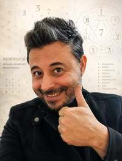
NumeroLogic – Pentagram Numerolojisi
Doğum tarihi ve sayı frekansı analizi, pentagram çizimi, çekirdek ve gölge pentagram yorumlamasıyla kişinin…
Eğitimi İncele →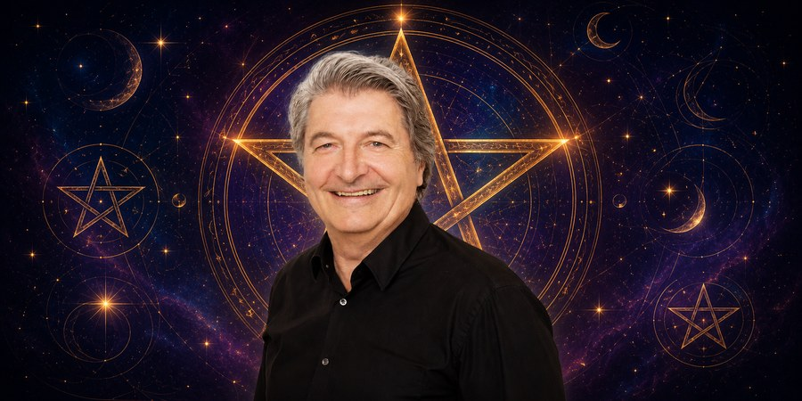
Numeroloji İlişki Analizi
Sinastri (iki kişi arasındaki ilişki uyumu) analizinin temel prensipleri; çakra dökümü üzerinden ilişki…
Eğitimi İncele →
Rüya ve Numeroloji Eğitimi
Rüya bilgeliği, bilinçaltı ve arketipler; numeroloji haritasının çıkarılması ve rüyaların harita üzerinden…
Eğitimi İncele →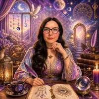
Tarot Arketipleri Eğitimi
Büyük Arkana'yı sembolik dil, Jung arketip kuramı, mitoloji, astroloji, Kabala, simya ve numerolojik kodlar…
Eğitimi İncele →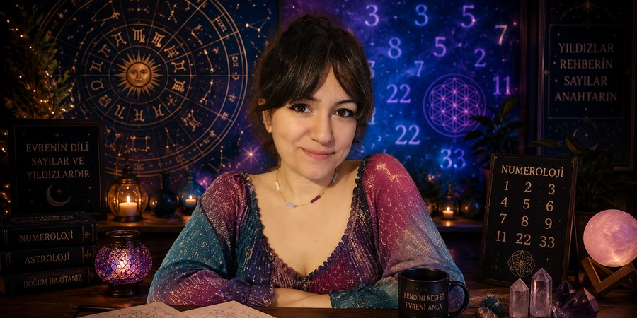
Yoga ve Numeroloji ile Çakralar Eğitimi
Çakraları yaşam deneyimleri üzerinden yogik yaklaşımla, hangi çakranın hangi sayıyla rezonans kurduğunu…
Eğitimi İncele →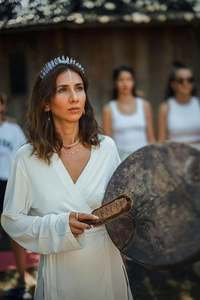
Emine Nevra Aya
Uzun yıllar bankacılık sektöründe kurumsal iletişim yöneticisi olarak görev yaptıktan sonra numeroloji ve sayı temelli analiz sistemlerine yönelmiştir. Numeroloji alanında danışmanlık ve uygulamalı eğitim çalışmaları yürütmekte; ulusal ve uluslararası düzeyde değerli numerolog ve eğitmenleri Türkiye'deki öğrenciler ve şifacılarla buluşturmayı misyon edinmektedir.
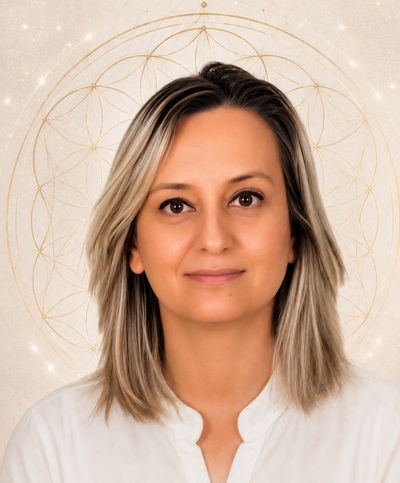
Sevim Üstüner Vardar
Çalışma hayatı dayanıklı tüketim malları ve otomotiv sektörü Ar-Ge bölümlerinde geçmiştir. 2023 yılında gördüğü bir paylaşımla kendini tanıma yolculuğuna başlamış, bu konuda birçok eğitim almış ve almaya devam etmektedir. Kendini bulma yolculuğunda olan kişilere destek olmaya çalışmaktadır.
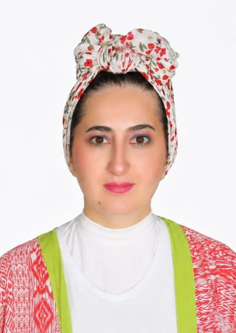
Jahan Murad
Uzun yıllar gayrimenkul sektöründe müşteri hizmetleri odaklı çalıştıktan sonra özel çocuk yeğenleriyle ilgilenmeye başlamıştır. Bu süreçte kişisel gelişim ve spiritüel konularda eğitimler almış ve almaya devam etmektedir. Özel çocuklar ve aileleri için koçluk yapmaya kendini adamıştır. İngilizce, Rusça, Türkçe, Türkmence akıcı; Arapça konuşabilmektedir.
Instagram'da Bizi Takip Edin
Yolculuğuna Bugün Başla
Sayılarının sana anlattığı hikayeyi öğrenmek ya da eğitimlerimiz hakkında bilgi almak için bize ulaş.
WhatsApp ile Yaz